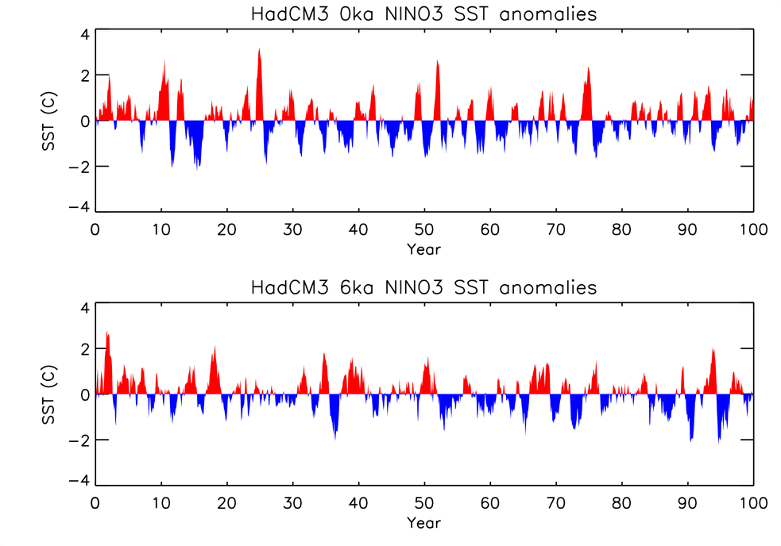

RAPID Project 443:Improving our ability to predict rapid changes in the El Nino Southern Oscillation climatic phenomenon
Sandy Tudhope, Mat Collins and Jo Brown
Project Details
Dr A Tudhope, Edinburgh University; Dr M Collins, Reading University; Dr R Ellam, Scottish Universities Environmental Research Centre (SUERC); Professor G Shimmield, Scottish Association for Marine Science (SAMS)
The objective is to use a combination of palaeoclimate reconstruction from annually-banded corals and the fully coupled HadCM3 atmosphere-ocean general circulation model to develop an understanding of the controls on variability in the strength and frequency of ENSO, and to improve our ability to predict the likelihood of future rapid changes in this important element of the climate system. To achieve this, we target three periods:0-2.5 ka: Representative of near-modern climate forcing; will reveal the internal variability in the system.6-9 ka: a period of weak or absent ENSO, and different orbital forcing; a test of the model's ability to capture externally-forced change in ENSO.200-2100 AD: by using the palaeo periods to test and optimise model parameterisation, we will produce a new, improved, prediction of ENSO variability in a warming world.
Output
There should finally be 2400 atmosphere files (100 years x 12 months x 2 sets of files) for each run, and 1200 ocean files (100 years x 12 months x 1 set of files) for each run.
The run "xbhub" is the pre-industrial run.
The run "xbhuc" is the mid-Holocene run.
The setup for the runs is standard resolution HadCM3 with the only difference between the runs being a change in orbital configuration.
The main focus of the study was to compare ENSO amplitude and frequency in the two simulations. It was found that the amplitude of ENSO was reduced in the mid-Holocene run by around 12% as measured from the standard deviation of NINO3 monthly SST anomalies. There was no statistically significant change in ENSO frequency in the mid-Holocene simulation.
The publications so far are:
Brown, J., M. Collins and A. Tudhope (2006), Coupled model simulations of mid-Holocene ENSO and comparisons with coral oxygen isotope records, Advances in Geosciences, 6, 29-33.
Brown, J., M. Collins, A. Tudhope and T. Toniazzo (2006), Modelling mid-Holocene tropical climate and ENSO variability: Towards constraining predictions of future change with palaeo-data, submitted to Climate Dynamics.
The link to publications can also be found on my web page:
http://www.met.reading.ac.uk/~jo/pubs/
For further information contact josephine.brown@reading.ac.uk or matthew.collins@metoffice.gov.uk.

Figure 1: HadCM3 simulations of pre-industrial (0 ka) and mid-Holocene (6 ka) ENSO: NINO3 SST monthly anomaly for 100 year model runs. The amplitude
of ENSO as measured from the standard deviation of the NINO3 timeseries
is reduced in the mid-Holocene simulation,which is qualitatively consistent with coral records from Papua New Guinea (Tudhope et al., 2001). Understanding the mechanisms and impact of a reduced ENSO amplitude in the mid-Holocene may help us to understand the potential role of the tropics as a driver of rapid climate change in the future.